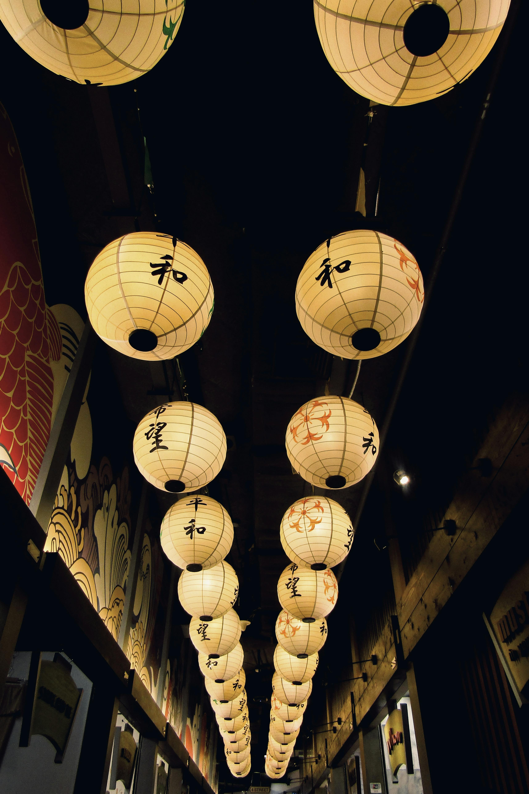
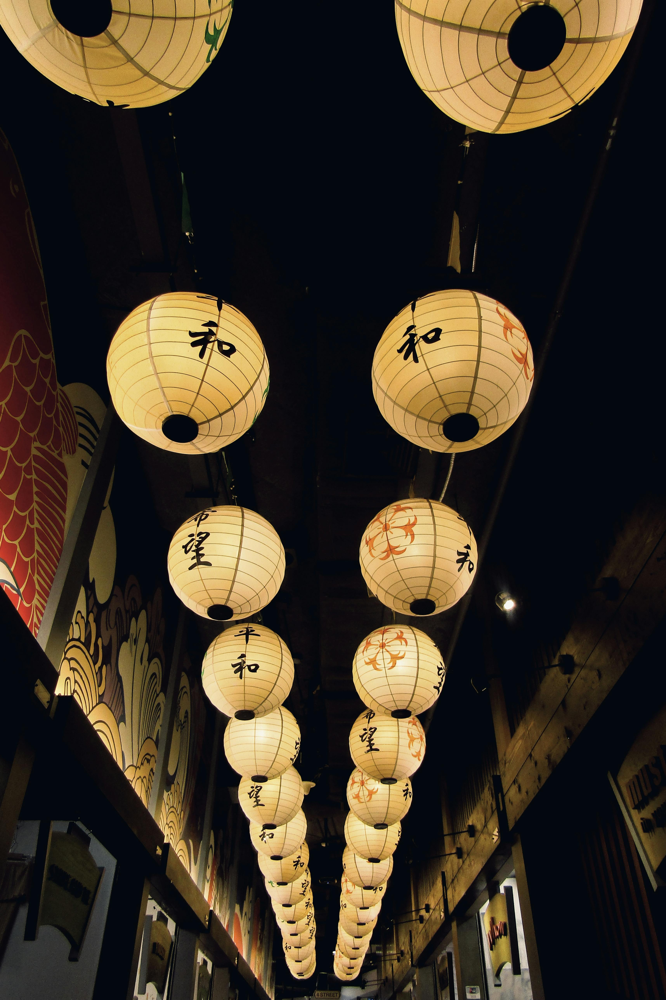
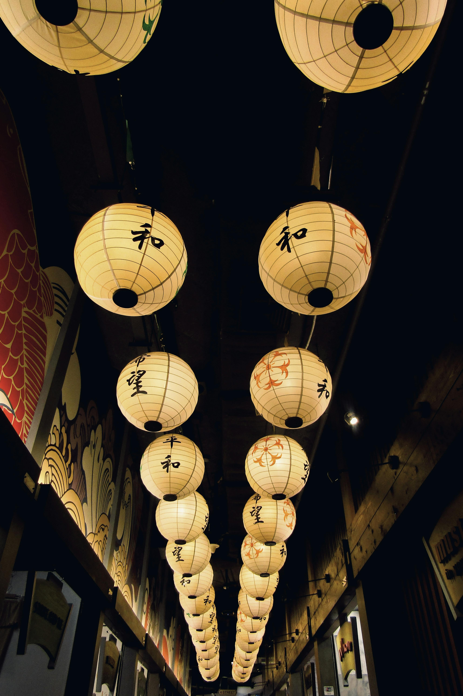

O Japão é um país fascinante que mistura tradição milenar com alta tecnologia, criando uma cultura única no
mundo. Conhecido por seus templos antigos, jardins zen, gueixas e cerimônias do chá, o Japão preserva suas
raízes enquanto lidera inovações em áreas como transporte, robótica e design. Cidades como Tóquio, Kyoto e Osaka
encantam pela organização, limpeza e diversidade de experiências.
A beleza natural do Japão também impressiona: montanhas como o Monte Fuji, florestas de bambu, flores de
cerejeira (sakura) e fontes termais fazem do país um destino perfeito para quem busca paz, inspiração e contato
com a natureza.
Além disso, o povo japonês é conhecido pela educação, respeito e hospitalidade. Viajar para o Japão é mergulhar
em um universo de contrastes harmoniosos, onde o antigo e o moderno convivem lado a lado. Cada rua, prato e
paisagem conta uma história rica em significado e beleza.
